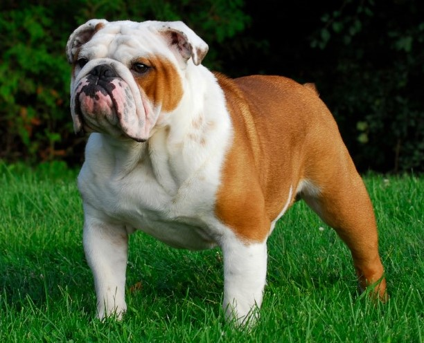

Maduro
Cuidados essenciais
- Fazer de dois a três passios diários
- A raça necessita de uma nutrição completa e equilibrada
- As rugas no rosto e focinho devem ser higienizadas de duas a três vezes por semana
- Evitar choques de temperatura e adversidades climáticas pois a raça é propensa a resfriados e pneumonia
